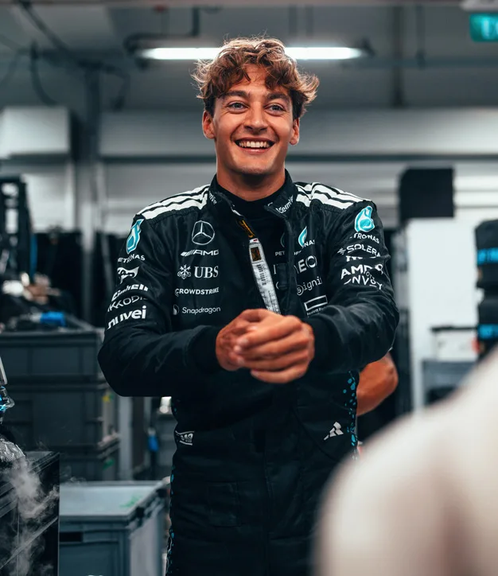

George Russell is the definition of someone who did everything right. He won F3 and F2 on his first attempt in each, joined Williams in 2019 and spent three years making an underpowered car look far better than it was. Mercedes finally promoted him in 2022 and he repaid them immediately, winning the Brazilian Grand Prix in his debut season. In 2025 he stepped up as the team's undisputed leader following Hamilton's departure, winning twice and pushing Mercedes back toward the sharp end of the grid. Precise, intelligent, and relentlessly professional.

Kimi Antonelli
Kimi Antonelli is only 18 years old and already racing for Mercedes — the team that scouted him during his karting days and fast tracked him through the junior ranks. He bypassed F3 entirely and made his F2 debut in 2024 before Mercedes decided they had seen enough. His 2025 rookie season had its rocky moments, but three podiums and a Sprint pole at Miami showed exactly why the team believed in him. Named after Kimi Raikkonen, he has the pressure of enormous expectation — and so far he has handled it remarkably well.
Driver History
Mercedes first competed in Formula 1 in 1954 with the great Juan Manuel Fangio, who won the championship that year and the next before the team withdrew. When they returned in 2010 with Michael Schumacher, expectations were sky high — but it took a few years to get going. Then came Lewis Hamilton in 2013, and everything changed. Hamilton and Mercedes became the most dominant combination the sport had ever seen, winning six consecutive Drivers' Championships together. Nico Rosberg claimed the 2016 title in a famous internal battle before retiring overnight. Hamilton then won four more. The standard they set between 2014 and 2021 may never be matched.